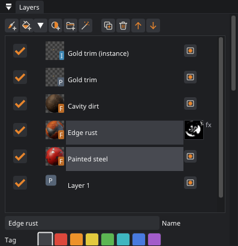
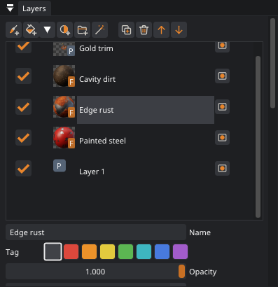
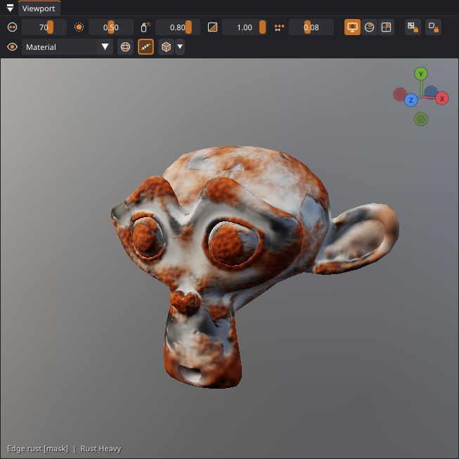
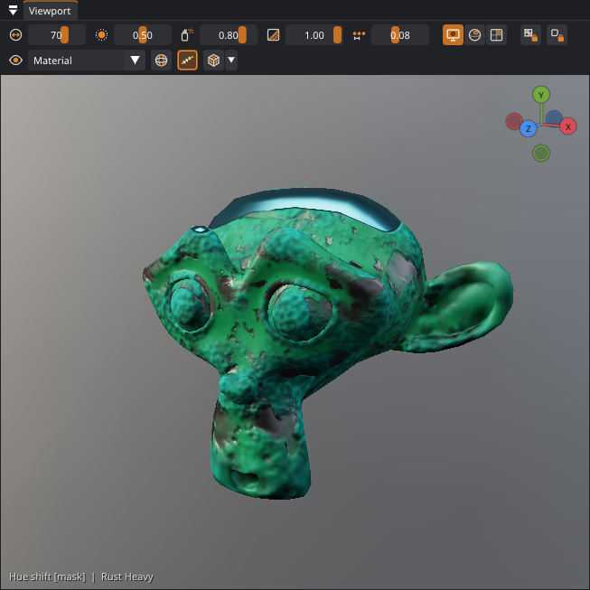
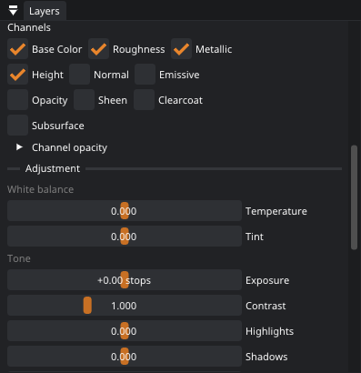
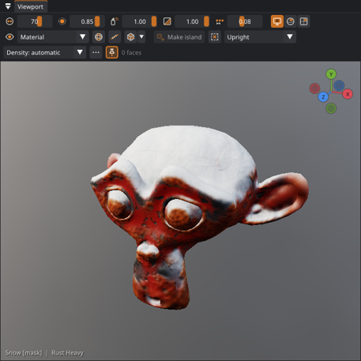
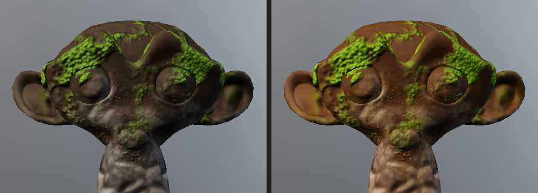
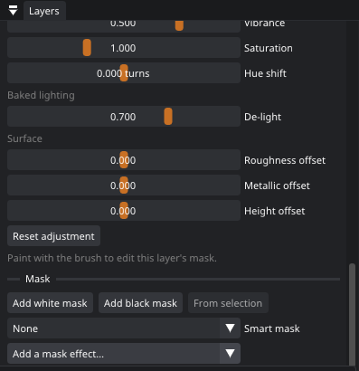
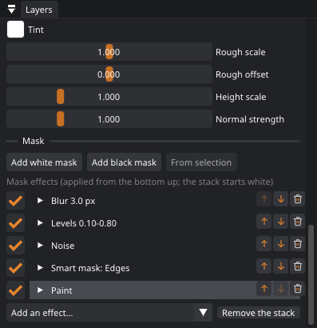

Layers and masks
Each layer adds something on top of the layers below it. Fill and adjustment layers are shaped by masks, including smart masks that find edges and cavities on their own. They let you build a worn, believable surface without painting every scratch by hand.


Layer types
| Type | Holds | Painting on it… |
|---|---|---|
| Paint | Your strokes, with every channel. | adds or erases paint. |
| Fill | One material over the whole model. | edits the layer's mask. White shows the material and black hides it. |
| Adjust | Develops everything below, the way you would a photo: white balance, exposure, highlights and shadows, vibrance, saturation, hue, De-light, and roughness / metallic / height offsets (see Developing the textures). | edits the mask, which limits where the adjustment applies. |
| Folder | Other layers. Its opacity, blend mode and mask apply to all of them (see Folders, solo and smart materials). | edits the folder's mask. |
| Baked map | A baked map (ambient occlusion, curvature or thickness) with your fixes and adjustments, in the Baked maps section under the stack. It makes the map smart masks, the 3D view and exports read (see Fixing a bake). Its check switches the map off in the 3D view and exports. | paints fixes over the bake; Erase brings the bake back. |
Each layer has an opacity, a blend mode (normal, multiply, screen, overlay, add, subtract, darken, lighten, add signed, soft light) and a per-channel switch with its own opacity. Drag layers to reorder them or to drop them into a folder (Ctrl: a copy), or use ; see Drag and drop. Duplicate (Ctrl+D) duplicates the selected layer and Delete (Delete) deletes it. Double-click a name to rename it. Right-click a layer for everything else: grouping, solo, color tags, masks, copying settings, saving it as a smart material and exporting it.
Each row shows a thumbnail of what the layer holds: the painted color, the fill material, or the adjustment. A second thumbnail shows the mask; click it to paint the mask.
The arrow next to Fill layer adds a fill layer with a black mask, which is the quickest way to paint a material onto part of the model: add it, then paint.
Drag and drop
Most things go into the stack by dragging them to where you want them. While you drag, the tooltip says what will happen where the pointer is, and an orange line or box shows the spot. Every drop is one undo step.
| Drag | Onto | What happens |
|---|---|---|
| A material (Materials tab) | The middle of a fill layer's row | The layer takes the material. Its mask, smart mask, mask effects, projection, scale and tint stay. A layer named after its old material takes the new one's name. |
| The top or bottom edge of a row, or any other layer | A new fill layer above or below it. | |
| The middle of a folder's row | A new fill layer at the top of the folder. | |
| The Fill material box in the layer's settings | The same as dropping it on the layer. | |
| The model in the viewport | A new fill layer above the selected layer. | |
| The Add a mask effect… box in a layer's mask settings | A Pattern effect from that material on top of the layer's mask, multiplied: the layer shows only where the pattern is. | |
| A Pattern effect's Material box | The effect takes that material's pattern. | |
| A fill layer's thumbnail | Another fill layer, or between layers | Its material, with all its settings (tint, scale, projection), goes there. |
| A smart material (Smart materials tab) | Between layers, or the middle of a folder | It goes in there. Dropped on the model, above the selected layer. |
| A smart mask (Smart masks tab) | A layer, or its Smart mask settings | The layer gets that smart mask. With a mask effect stack it is added to the top of the stack. |
| A layer's mask thumbnail (or Mask button) | Another layer | The mask is copied there: the painted mask, the smart mask and the mask effects. |
| A layer's name | Between layers, or the middle of a folder | The layer moves there. Hold Ctrl when you let go to put a copy there instead. |
The space under the last row is the bottom of the stack. In a long stack, hold the pointer near the top or bottom edge of the list while you drag and it scrolls.
Masks
A paint layer can also have a mask. Click Add mask on its row, then the same button (Mask) to paint the mask rather than the
layer. The viewport label shows [mask] while you are painting a mask. Add White Mask and Add
black mask set the starting state. Black hides the whole layer, so you can then reveal it with the brush.
From selection (in the mask settings, or right-click ▸ Mask from the Face Selection) makes the mask white on the selected faces and black everywhere else. Select an island, a material slot or a painted region (the Island brush selects too), and the layer shows only there. It is one undo step, and you can keep painting the mask afterward.
Smart masks
A smart mask is a procedural mask worked out from the model's shape. Pick one in the layer's Smart mask combo, or drag one from the Smart masks tab of the Materials panel onto the layer. Patina bakes the mesh maps it needs (ambient occlusion, curvature or thickness) the first time you choose it. The Layer Mask view mode shows the selected layer's effective mask: the painted mask, the smart mask and any effect stack combined.
| Smart mask | Picks out | Typical use |
|---|---|---|
| Edges (curvature) | Convex edges and corners | Paint wearing off, rust and polish on edges |
| Cavity | Creases and crevices | Dirt, grime, dust in corners |
| Occlusion | Areas that light reaches poorly | Soot, moss, darkening |
| Height gradient | Bottom to top of the object | Mud on the lower parts, water lines |
| Noise | 3D noise of a kind: clouds, cells (round spots), cracks (a network of lines), ridges (thin veins) or streaks (running down) | Patchy variation, stains, spots, crazing, rain marks |
| Facing direction | Surfaces that face a direction (up, down, front…) | Snow and dust on top, drips and moss underneath, sun bleaching on one side |
| Material slot | The faces of one Blender material slot | One material per part of the model, without painting a mask |
| Thin parts (thickness) | Thin parts: ears, fins, blades, the edges of cloth (from the thickness bake) | Light shining through skin or leaves, worn-through fabric, translucency maps |
| Gradient | Dark to light across the model, the way you choose (up, down, left, right, front, back or toward the camera) | Fades, two-tone parts, sun bleaching from one side |
| Drips | Thin streaks running down the sides from random starts, fading as they go (never on top surfaces). Noise scale sets their size. | Rain marks, rust runs, leaks under rivets and pipes |
Level moves the threshold and Contrast sets how sharp the transition is. Noise and Noise scale break up the edge so it looks natural, and Invert flips the mask. Smart masks combine with painted masks, so you can paint extra wear on top or erase it where it doesn't belong.




Developing the textures
An adjustment layer works on the finished look of everything below it, the way the basic adjustments in a photo editor work on a photo. It is the place to fix textures that came with a model (see models that come with textures): too dark, too blue, too dull, or with shadows baked in. Nothing below is changed, so you can turn it off, lower its opacity, or paint its mask to develop only part of the model.


| Setting | What it does |
|---|---|
| Temperature, Tint | White balance: cooler (blue) to warmer (yellow), and greener to more magenta. The brightness stays. |
| Exposure | In stops, as on a camera: +1 is twice the light, −1 half. |
| Contrast, Brightness | As before 0.33. |
| Highlights, Shadows | The bright parts and the dark parts on their own: lift the shadows of a dark scan without washing out the rest, or bring back a sky-lit top that came out too bright. |
| Vibrance | More (or less) color, mostly in the dull colors, so colors that are already strong and skin do not go garish. Saturation changes all colors alike. |
| De-light | Takes the shadows baked into the color out: scans and generated models carry the light they were made in, so their crevices are dark in the texture itself, and they go darker again under your lights. De-light brightens what the ambient occlusion darkens. It bakes the ambient occlusion the first time. |
Exposure, white balance, highlights, shadows and De-light work in linear light, as a camera's raw developer does; the other settings follow, in that order. An adjustment layer at its defaults changes nothing.
The PBR Range view mode checks the result (see View modes).
Mask effect stacks
One smart mask is often not enough: rust on the edges, but broken up by noise, a bit softer, and scraped away by hand in places. A mask effect stack builds a mask from several steps. Pick one in Add a mask effect… under the mask settings: the painted mask and the smart mask become the first two effects, and the new one goes on top. The stack starts white, and the effects apply from the bottom of the list up.

| Effect | Does |
|---|---|
| Paint | The mask you paint (one per stack). |
| Smart mask | Any of the smart masks above, with its own settings. |
| Fill | A flat value. |
| Noise | 3D noise with scale, seed and contrast. |
| Levels | Remaps the stack so far: input range, gamma, output range. |
| Blur | Softens the stack so far (in texels), staying on the surface. |
| Invert | Flips the stack so far. |
| Grow / shrink | Spreads the white of the stack so far out (amount above 0) or pulls it in (below 0), in texels, staying on the surface. |
| Edges | Keeps only the edges of what the stack covers so far, as a band of the width you set: a pale rim round chips, a dark line round a patch. |
| Pattern | Any library material as a mask: its height, brightness, roughness or metal, projected like a fill layer's material, with a level, a contrast and invert. Bricks, scratches, stripes, cracks, a circuit… Drag a material onto Add a mask effect… to add one. |
Each effect has an on/off switch, an opacity and, for the ones that make a mask (paint, smart mask, fill, noise),
a blend mode: normal, multiply, add, subtract, lighten, darken or screen. ^ / v move an effect, x
removes it, Remove the stack goes back to a plain mask. Everything is one undo step per change, and Claude can
build stacks with add_mask_effect and update_layer (mask_effects).
Instances
An instance (right-click › Make an Instance, Alt+D) is a linked copy of a layer: it shows the same paint or fill as its source, everywhere the source changes, but has its own mask, opacity, blend mode and place in the stack. Use one to repeat a decal layer in a second folder with another mask, or to put the same dirt pass at two strengths. Painting on an instance paints its source. Select the Source jumps to it, and Make independent turns the instance into an ordinary copy. Deleting the source hands its content to the first instance.
A typical stack
- Base: a fill layer with the main material, for example Painted Metal Chipped.
- Wear: a fill layer of Rust Heavy with the Edges smart mask, Level about 0.65 and some Noise.
- Dirt: a fill layer of Mud with the Occlusion or Cavity mask at 60–80% opacity.
- Details: a paint layer on top for decals, trims and hand-placed scratches.
- Color grade: an adjustment layer at the very top to try out color variations without repainting.
Steps 1–3 are exactly what the built-in smart materials contain. Add Smart… ▸ Worn painted metal and adjust it, rather than building the stack from scratch.
Undo
Ctrl+Z undoes everything: strokes, fills, layer changes, every slider in the layer settings, masks and UV edits. The History panel lists the steps and lets you jump back to any of them. Patina stores only the parts of the textures that changed, so long sessions don't use up memory.